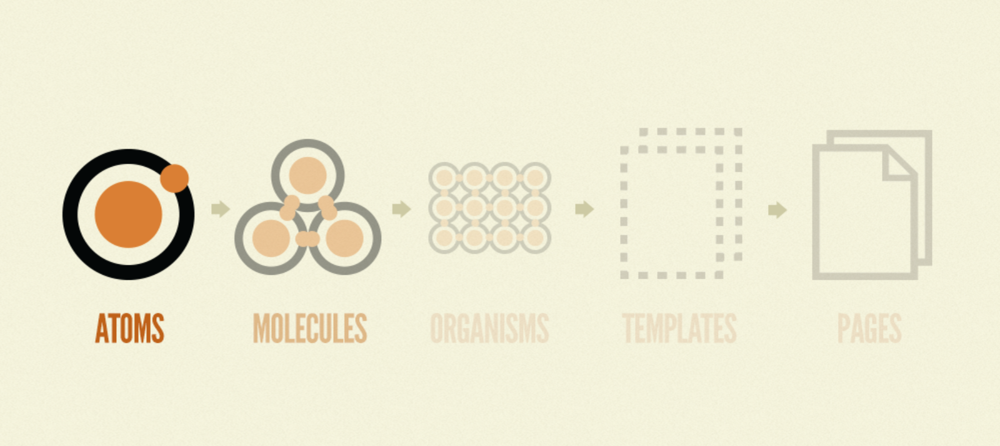

Building a Design System
Goals
• Create a space where members from all teams (UX, QA, Dev, PM, etc.) can reference design standards.
• Ensure team members find the system valuable in helping them accomplish their day to day work.
Researching Best Practices
In order to make sure the system was valuable we talked to members of different teams to see what they would find most helpful in a design system.
For example, members of the development team said they would find it helpful to be able to view the specifications of different components along with their interactions.
With this in mind, we decided it would be helpful to not only show screenshots of the components, but visuals of how they work.
Atomic Design Methodology
I am a strong believer in Brad Frost's Atomic Design Methodology . I believe that strong design systems require attention to detail, specifically when it comes to all the components (or atoms) that contribute to the larger pages.
Build it in Figma: Create a Design System - Foundations
One resource I used in order to understand best practices related to creating design systems was Rogie King's YouTube series "Build it in Figma: Create a Design System - Foundations." This helped me understand more about how to take advantage of specific features to unlock Figma's full potential.

Learn Design Systems with Dan Mall
Another resource I used in order to understand best practices related to creating design systems was a Dribbble workshop "Learn Design Systems with Dan Mall." This helped me determine what to include and not to include in the design system.
Getting Started
With a large application it would be difficult to add every component into the system. To determine the most effective components and how to prioritize them I attended a Workshop, "Learn Design Systems with Dan Mall."
I learned that it is important to "Focus on the mundane." This means that adding the most basic elements (see list below) to the system can allow the team to spend less time on the basics and more time finding creative solutions.
More on this theory: The Most Exciting Design Systems are Boring
Creating Components
With the strategy in place it was time to start identifying the atoms & molecules and building them in Figma. Again, these are the smaller elements that we can use to construct more complex elements later.
With the atoms in place, we moved on to building the organisms which are made up of the atoms and molecules from above. Many of which utilize the buttons and checkboxes.

Adding Interaction
After constructing all of the different components, we built a strong component library which which was a great start for the system.
However, team members we talked to mentioned they would like to see interactions for different components. So, we took it a step further in Figma and added prototypes for these components to demonstrate how actions like hovering and clicking change the design.
Also we used iframes to embed the prototypes into the Confluence page so viewers could interact with the component themselves while viewing the documentation!